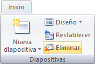

Diapositivas
En sus presentaciones puede realizar las siguientes acciones con las diapositivas existentes:
Duplicar diapositiva significa insertar otra igual a la que usted seleccione. Esta función es útil cuando queremos copiar diapositivas muy similares, que cambien sólo en pequeños fragmentos de texto o colores. Para hacerlo, hay que seguir estos pasos:
| 1 | Ubique la diapositiva que quiere duplicar. La diapositiva duplicada se insertará enseguida de la que seleccionó. |
| 2 |
Abra el menú "Inicio" (Home) y haga clic en
"Nueva diapositiva" (New Slide).
|
| 3 | Del menú seleccione la opción: "Duplicar diapositivas seleccionadas" (Duplicate selected slides). |

Esta función de mover diapositivas sirve para cuando hemos diseñado una presentación, y queremos cambiar de orden una diapositiva, es decir, cambiarla de lugar. Por decir, diseñamos una diapositiva que está en la página 3, pero ahora queremos que esté en la página 4, entonces utilizamos esta función de mover la diapositiva. La forma más fácil de hacerlo es la siguiente:
| 1 | Seleccione la diapositiva a mover en la vista (panel izquierdo). |
| 2 | Sin soltar el botón izquierdo del ratón arrástrela hasta la posición donde quiera situarla. |
| 3 |
Al desplazar la diapositiva se verá el
apuntador del ratón con una flecha con un
rectángulo debajo y aparece una línea entre
diapositiva, esta línea indica en que posición
se situará la diapositiva.
|
Esta función sirve para cuando ya no queremos utilizar información en una presentación. En lugar de borrar texto por texto, se borra la diapositiva completa, si es que así se desea. Hay varias formas, la más común es con las teclas de control:
| 1 | Seleccione la diapositiva que quiere borrar. |
| 2 | Presione la tecla Supr |
Otra forma de hacerlo es desde los menús:
| 1 | Seleccione la diapositiva que desea borrar. |
| 2 |
Abra el menú "Inicio"(Home).
 |
| 3 | Seleccione la opción "Eliminar diapositiva" (Delete slide). Automáticamente la diapositiva desaparecerá . |